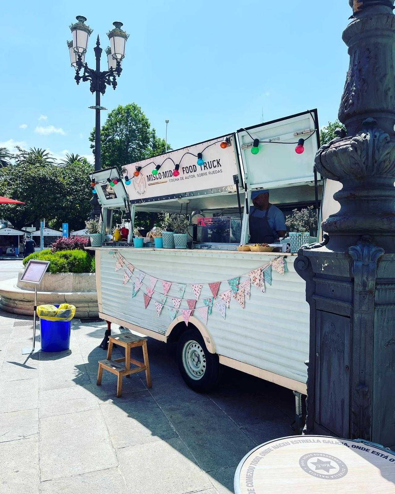
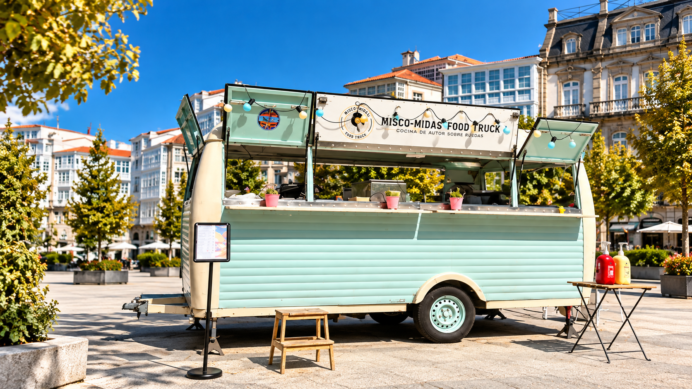
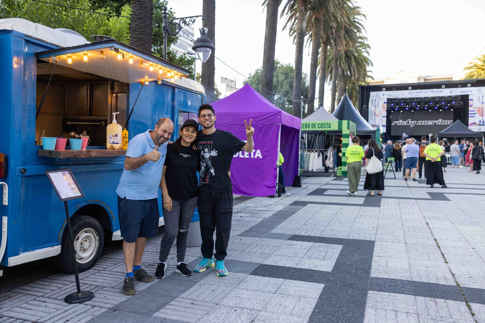
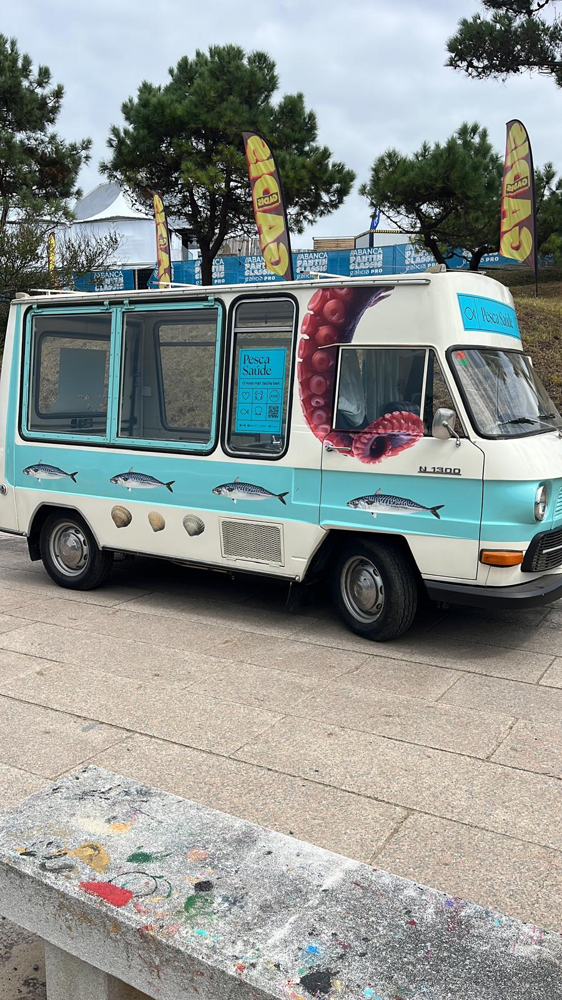
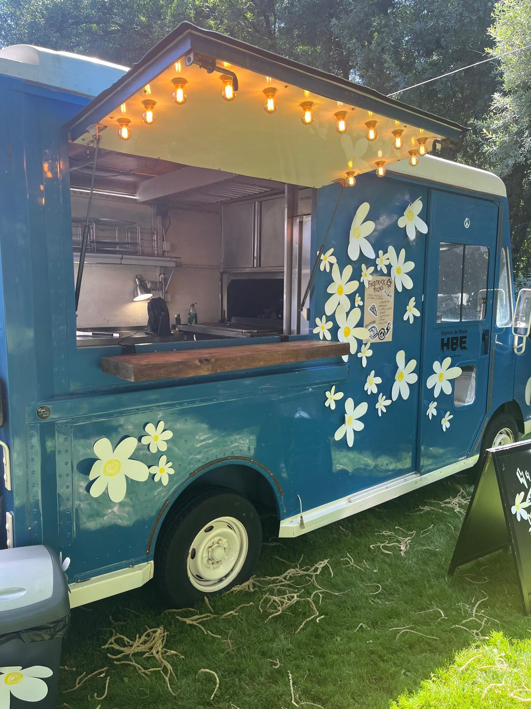
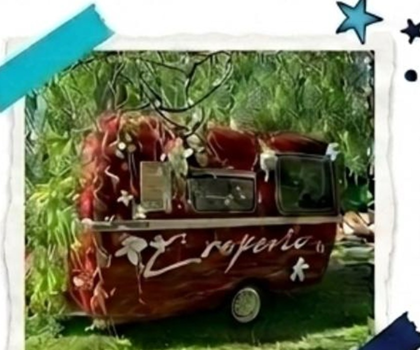
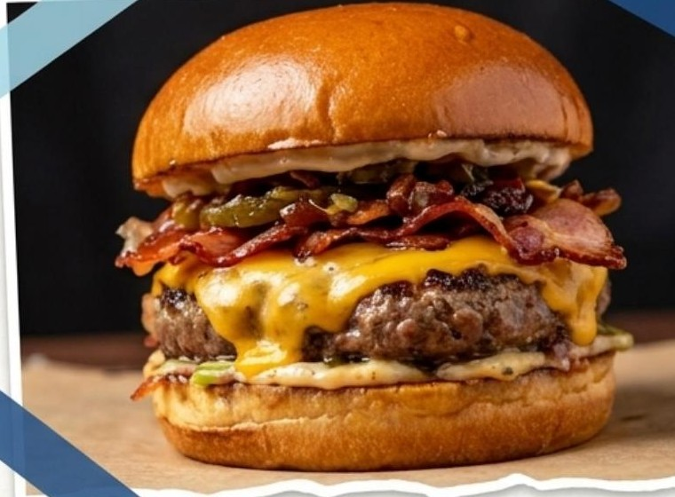
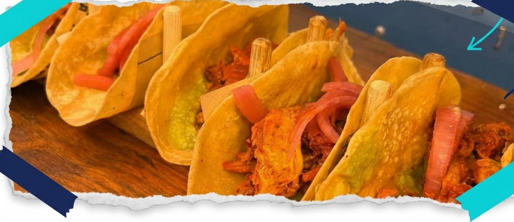
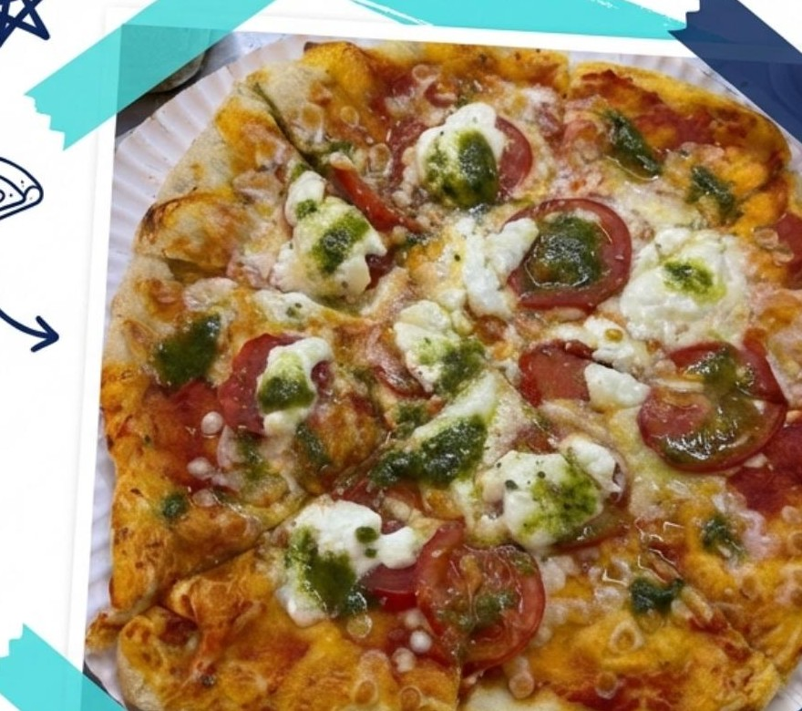
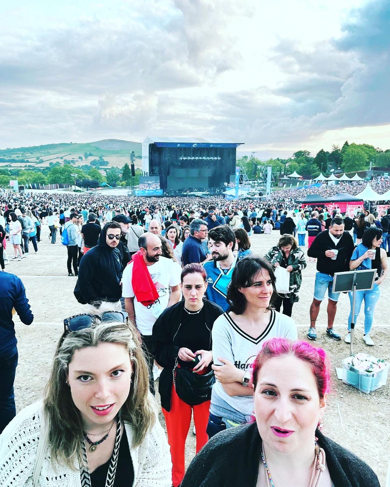

01
Averne Vintage
La más versátil de la flota. Un clásico con presencia para eventos urbanos, celebraciones y propuestas a medida.

A Coruña · Galicia · donde haga falta
Food trucks con carácter, cocina en directo y una flota preparada para acompañar celebraciones, empresas y festivales.
Quiero una propuestaDesde 2016Cocinando sobre ruedas
+400 eventosExperiencias compartidas
4 food trucksFlota propia y versátil
Diseñamos servicios de food truck para que la comida forme parte del ambiente: una parada con personalidad, una cocina que se ve y un equipo que acompaña el ritmo de cada celebración.

Personas detrás del servicio
Trabajamos desde A Coruña para toda Galicia y nos desplazamos allí donde el evento lo necesita. Nuestra experiencia abarca celebraciones privadas, jornadas de empresa, conciertos, ferias y eventos de marca.
Ver tipos de eventoNuestra flota
Cuatro propuestas con personalidad propia para elegir el formato, el menú y la puesta en escena adecuados.


02 · Elegancia Clásica

03 · BrasaGo

04 · La Creperie Vintage
La parte que se disfruta
Hamburguesas artesanas, perritos premium, tacos, cocina asiática, pizzas y propuestas a medida. Adaptamos la selección al lugar, al momento y al público de cada evento.




Hacemos que encaje
Cuéntanos dónde, para cuántas personas y qué quieres que se sienta. Elegimos la food truck y la propuesta gastronómica para que funcionen de verdad en ese día.
¿Lo hablamos?
Esta versión está preparada para recoger observaciones antes del diseño final.
Solicitar cambios por WhatsAppMisco-Midas Food Truck · A Coruña · Servicio en Galicia y desplazamientos